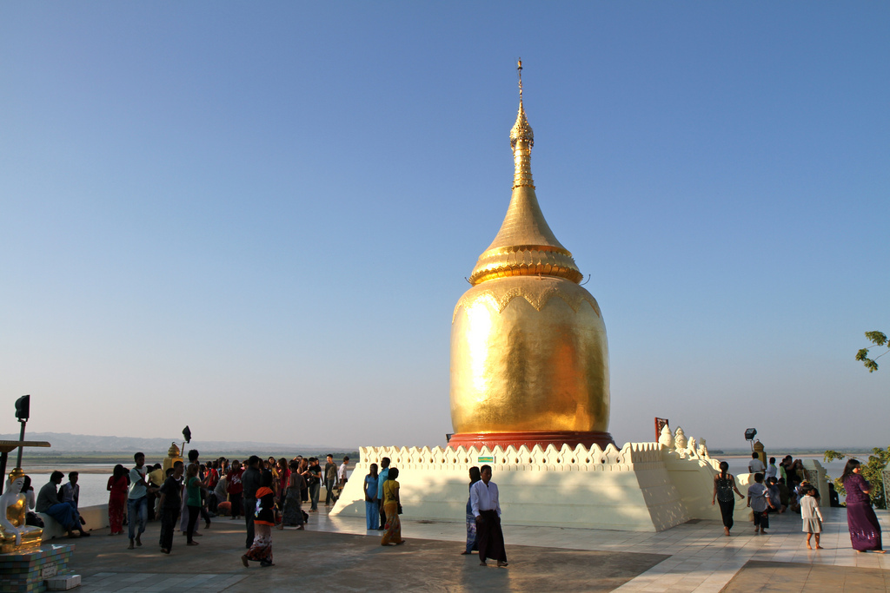
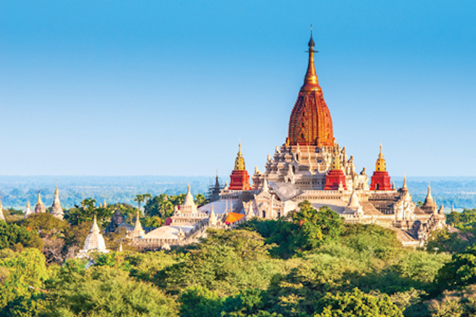
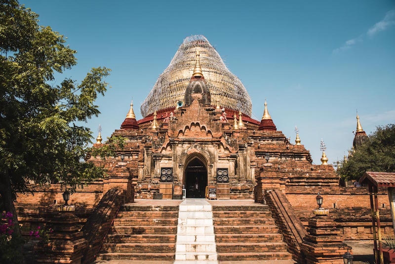

Bagan in Burma is one of the most significant archaeological sites of South East Asia. In spite of this, it is still relatively unknown because of the isolation the country has been in for decades.Bagan is an ancient city that was the capital of the prosperous Bagan empire that controlled most of present day Burma. At the height of empire’s power between the 11th and 13th century more than 10,000 temples and pagodas were built.Today, about 2,200 monuments remain in various states of repair, which makes Bagan one of the most dense concentrations of temples and pagodas in the world.The scale of Bagan can be overwhelming with its thousands of monuments as far as the eye can see. Some are very well maintained and have been restored, while others are neglected and overgrown with vegetation.
Shwe Si Gone Pagoda
Bagan still has over 2,000 temples remaining, down from 10,000-plus in its glory days.The stupas that litter the temple plain were built by Bagan residents as acts of merit; at the height of the Pagan Kingdom, even the middle classes built their own stupas, though none were to rival the ones commissioned by Bagan's kings.

"Bu" Pagoda

Ananda Pagoda
If you follow the main road in the direction of Alt-Bagan, you will reach the Ananda Temple just before the gates of the city. The Ananda Temple (or also called Ananda Phaya) is, for us, one of the absolute must-see temples in Bagan. Even from the outside, the white temple with the golden stupa stands out from amongst its crowd. No other temple in Bagan resembles the Ananda Temple and that makes it especially intriguing and unique. The temple has also been beautifully renovated, with four giant standing Buddhas inside, facing the four cardinal points, like many of the Buddhist temples in Myanmar.

Dhammayazika Temple
Amongst the more unknown pagodas, the Dhammayazika pagoda really took to our liking. Since it’s one of those “off the beaten track”, there was hardly anybody there apart from us, so we got to explore the pagoda in peace.